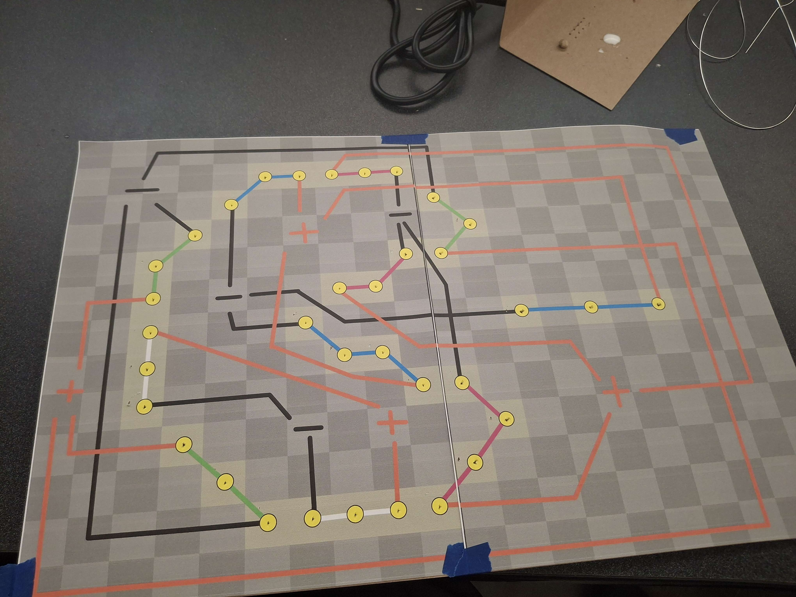
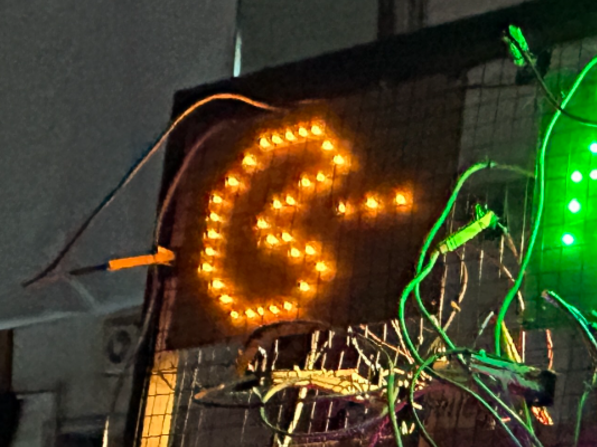

Lyndon Livingston
ART 106 : Leds at Makefaire


Part 1
Whats in the box? Leds!
-- Phase 1 is our intro to creating a circuit of LEDs. We used cardboard to hold our LEDs in
place while we had all the wiring and connections behind the cardboard
-- The main pull from phase 2 was using a breadboard to limit the amount of soldering. With
the use of the breadboard, as well as having to solder less, it also allows the wiring to look cleaner
and more organized.
-- Phase 3 introduced a switch system to our circuit. previously we had been just touching the ends
of our wire to our 9V battery. Now we had a battery clip that we could hook up to our circuit via our
breadboard.
-- Phase 4 was supposed to be our final presentation of the prior 3 phases. I do not think I
followed the order of phases or operations correctly as I do not think I executed the desired result. What I
presented did not use a breadboard and switch did not have the clothes pin attached.

Part 2
Snap! Glow... Pop!!!
-- Phase 5 is art106 MakerFaire Led Synth, a collaborative project between the whole art106 class that
is to be presented at Maker Faire. The class was broken into pairs and with our partner we were to design an
image out of multiple LEDs. The board has to have 4 switchable circuits in order to trigger the whole image.
My partner and I both enjoyed videogames. So we wanted to make an pixel art Pac-Man.
-- Phase 6: Our design shows our whole image to be made out of 9 trios of LEDs and 2 quads and those 11
are split between 4 different switches in such a way that if only one switch is pressed(many two), you would
not be able to tell what the design is. It definitely requires all 4 switches to be appreciated.
Though we split the amount of soldering between us, my parnter Aron was responsible for and managed a lot of
the setup with regards to the resistors. Meanwhile, I managed the final assembly of the breadboard and the
final construction of all the components. After my construction, our pacman was done.
-- Phase 7 was presenting our pacman at MakerFaire along the other groups of the class. We had all of
our LED designs attached to a metal, wire frame along with on of the clips and coresponding pegs. The clips
and pegs were decided my the class to be our switches inspire from old manual telephone switchboard. People
seemed to enjoy playing with the whole switchboard and interacted with the whole project while it was on
display.


{kind=link}
{kind=link}
{kind=link}
{kind=link}
{kind=link}
{kind=link}
{kind=link}
{kind=link}